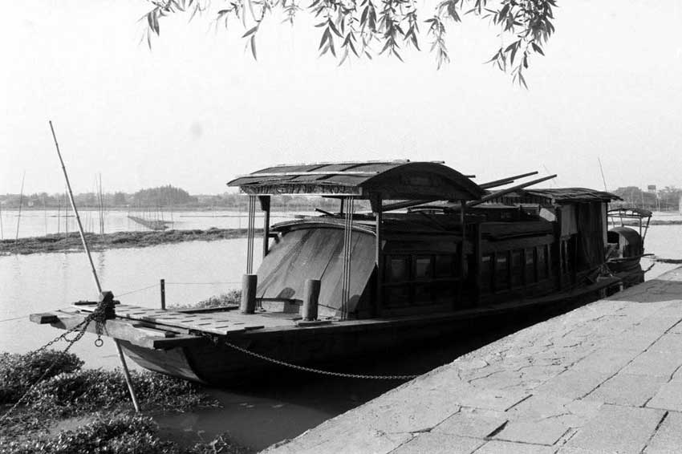

1921年１月 毛泽东在新民学会新年大会上讨论“改造中国与世界”的方法问题时指出，
资产阶级改良主义是补苴罅漏的政策，不成办法；社会民主主义的议会道路是保护有产
阶级的；无政府主义的主张是永世做不到的；“激烈方法的共产主义，即所谓劳农主义，
用阶级专政的方法，是可以预计效果的，故最宜采用”。
６月 共产国际代表马林抵达上海。他与共产国际远东书记处派来接替维经斯基工作的
尼克尔斯基会合，并很快同当时主持上海共产党早期组织工作的李达、李汉俊建立了联
系，在了解到中国共产党筹建工作的基本情况后，建议及早召开党的全国代表大会，宣
告中国共产党的正式成立。
７月２３日－８月初 中国共产党第一次全国代表大会在上海举行（一大开幕日期是建
国以后根据档案材料查证清楚的。闭幕日期是8月1日或2日。在此以前，1938年5月，
毛泽东在《论持久战》中曾提到7月1日是党建立十七周年纪念日；1941年6月，中共中
央在《关于中国共产党诞生二十周年抗战四周年纪念指示》中，规定7月1日是党的诞生
纪念日。这是因为在抗日战争时期，对一大的开幕日期难以查证，所以把7月的月首定为
党的诞生纪念日。）。出席大会的有国内各地和旅日共产党早期组织（旅法共产党早期组
织接到开会通知后，因为路途遥远没有派代表回国参加。）的代表十二人，他们是：毛泽
东、何叔衡、董必武、陈潭秋、王尽美、邓恩铭（水族）、李达、李汉俊、张国焘、刘仁
静、陈公博、周佛海，参加大会的还有陈独秀指定的代表包惠僧（刘仁静，第一次大革命
失败后脱党，参加托派组织，全国解放后曾发表声明，自称在1937年已被托派开除。陈公
博，1922年叛党；周佛海，1924年叛党。1927年后，陈、周二人都在国民党中担任要职
，并于抗战爆发后投降日本，成为汉奸。包惠僧，1927年脱党，全国解放后任国务院参事
等职。）。他们代表着五十多名党员。共产国际代表马林和尼克尔斯基也出席大会。大会
进行到７月３０日晚上，会场突然遭到暗探的侦察、法租界巡捕的骚扰，被迫休会。最后
一天的会议是转移到浙江嘉兴南湖的一艘游船上举行的。
党的第一次全国代表大会的中心任务是讨论正式成立中国共产党的问题。大会通过中国共
产党党纲，确定党的名称是“中国共产党”，并规定党的奋斗目标是：以无产阶级的革命军
队推翻资产阶级，由劳动阶级重建国家，直至消灭阶级差别；采用无产阶级专政，以达到
阶级斗争的目的――消灭阶级；废除资本家所有制，没收一切生产资料归社会所有。党纲明
确提出，把工农劳动者和士兵组织起来，宣传共产主义，承认社会革命为党的首要政策。
党纲规定了民主集中制的组织原则和党的纪律。大会还通过了《关于当前实际工作的决议》
，确定党成立后的中心任务是组织工人阶级，领导工人运动。《决议》还规定，在反对军阀
官僚的斗争中，在争取言论、出版、集会自由的斗争中，采取独立的政策以维护无产阶级
的利益。从此，在中国出现了完全新式的、以共产主义为目的、以马克思列宁主义为行动
指南的、统一的和唯一的工人阶级政党。大会选举陈独秀、张国焘、李达组成中央局，陈
独秀为中央局书记。
８月 中国劳动组合书记部（即中国工会办事处）在上海成立。随后又在北京、武汉、长
沙、广州、济南设立分部，作为党公开领导工人运动的机关。中国劳动组合书记部出版了
指导工人运动的刊物《劳动周刊》；举办工人补习学校，帮助工人学习文化，同时秘密地
向工人宣传马克思主义，帮助他们提高阶级觉悟，掌握斗争本领；在办好工人学校的基础
上，逐步组织产业工会。在党领导下，工人运动和罢工斗争有了新的发展。
９月 党在浙江省萧山县衙前村领导农民建立农民协会，发表农民协会章程和宣言。二三
个月内，农民协会发展到萧山、绍兴两县的八十多个村庄，有的地方进行抗税减租斗争，
但是很快遭到封建势力和反动军警的镇压。
１０月１３日，粤汉铁路武昌、长沙段工人在武汉党组织领导下，为增加工资、改善生活
待遇举行罢工。２５日，上海英美烟厂工人九千多人，在中国劳动组合书记部的领导下，
反对厂方无故开除和欺压工人，举行罢工。１１月，陇海铁路机务工人，为反对裁人减薪、
虐待工人举行罢工，全路二千多工人群起响应。１２月，汉口人力车工人也举行罢工。
１１月 中国共产党中央局发出通告，对党的组织、宣传工作作了部署。要求上海、北京、
广州、武汉、长沙五区，在１９２２年７月以前，党员都要达到30人，尽早成立区执行委
员会，以便１９２２年７月召开第二次全国代表大会时正式成立中央执行委员会。同时规
定：全国青年团员要超过2000人；各区至少要有直接管理的工会1个以上；中央宣传部门
要出版有关共产主义的书籍20种以上。